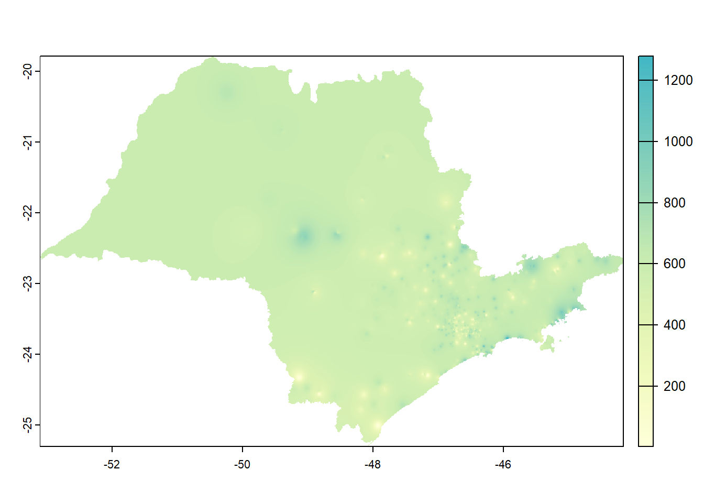

11 Interpolação por Proximidade
Uma das interpolações mais simples. Pode ser gerada a partir de polígonos de Thiessen ou por Polígonos de Voronoi. As duas técnicas dividem o espaço com base na proximidade dos pontos de dados. A diferença principal está na maneira como as células são delimitadas: os polígonos de Voronoi têm bordas equidistantes entre pontos de dados mais próximos, enquanto os polígonos de Thiessen incluem todos os pontos mais próximos a um ponto de dados específico.
Vamos calcular o Diagrama de Voronoi. Cada polígono de Voronoi representa a área em torno de um ponto de amostra onde esse ponto é o ponto mais próximo em comparação com todos os outros pontos de amostra. Cada ponto em um polígono de Voronoi é mais próximo do ponto associado a esse polígono do que de qualquer outro ponto de amostra. Isso cria uma tesselação do espaço onde cada ponto dentro de um polígono de Voronoi é atribuído ao valor do ponto associado a esse polígono.
Este método de interpolação é eficaz quando a distribuição dos pontos de amostra é representativa da variação espacial dos dados. No entanto, pode não ser ideal quando a densidade dos pontos é muito alta ou muito baixa. Além disso, a Interpolação por Polígonos de Voronoi pode produzir resultados descontínuos em locais onde os polígonos se encontram, resultando em superfícies interpoladas com bordas nítidas.
Vamos seguir o roteiro de Davis (2022) para a elaboração de um mapa com base nos polígonos de Voronoi e sua validação. O primeiro passo será gerar um vetor de pontos a partir dos dados de precipitação. Com o vetor, geramos os polígonos de Voronoi e plotamos os resultados.
#para gerar um vetor de pontos a partir dos dados de precipitação
veraoV <- vect(verao_sirgas)
#para gerar os polígonos de Voronoi a partir do vetor criado
v <- voronoi(veraoV)
#para plotar os polígonos
plot(v)
#para plotar os pontos sobre os polígonos
points(veraoV)Figure 11.1: Polígonos de Voronoi
Para que a visualização fique mais compreensível, vamos recortar os polígonos gerados, usando os limites do objeto ‘ufsp’. Aproveitamos para criar uma paleta de cores adequada, já que um mapa isarítmico deve ser representado por meio das variáveis visuais valor ou cor ordenada (Figura 11.2). https://r-charts.com/color-palettes/ e https://pmassicotte.github.io/paletteer_gallery/
#para recortar os polígonos de Voronoi considerando os limites dos municípios de 'ufsp' que contêm estações pluviométricas
vVerao <- crop(v, vect(st_union(ufsp)))
#para criar uma paleta de cores usando RColorBrewer para 5 cores em blue+purple ("BuPu")
azuis <- brewer.pal(7, "BuPu")
breaks <- c(0, 200, 400, 600, 800, 1000, 1200)
#para plotar a precipitação nos polígonos nos municípios, usando a paleta de cores 'azuis'
plot(vVerao, "prec", col = azuis, breaks = breaks)Figure 11.2: Precipitação (em mm) segundo polígonos de Voronoi no Estado de São Paulo
Os polígonos podem ser convertidos para uma imagem raster. Para isso, define-se primeiro a resolução espacial do raster, em em seguida, são atribuídos os valores.
#para criar uma imagem raster em branco
r <- rast(vVerao, res = 0.01)
#para criar a imagem com os dados
vr <- rasterize(vVerao, r, "prec")
11.1 Validação cruzada
Para avaliar o desempenho da interpolação por polígonos de Voronoi, vamos usar a validação cruzada. Esta técnica consiste em particionar o conjunto de dados em subconjuntos mutuamente exclusivos. Em seguida, alguns destes subconjuntos são usados para a estimação dos parâmetros do modelo (dados de treinamento), sendo os subconjuntos restantes (dados de validação) usados para a validação. Existem diversas formas de particionar os dados, tais como: métodos holdout, k-fold e o leave-one-out (KOHAVI, 1995). Aqui, usaremos o método ‘k-fold’.
# validação cruzada usando o método k-fold
k <- 5
#pode ser qualquer número
set.seed(23) # 5132015
#para gerar números aleatórios entre 1 e 5 do mesmo tamanho dos pontos de entrada de veraoV
kf <- sample(1:k, size = nrow(veraoV), replace=TRUE)
#para gerar conjunto em branco de 5 NAs
rmse <- rep(NA, k)
#função
for (i in 1:k) {
teste <- veraoV[kf == i, ] # divide em k conjunto de pontos,
# (k-1)/k vai para o conjunto de treino,
treino <- veraoV[kf != i, ] # e 1/k vai para teste, incluindo todas as variaveis
#para gerar os valores para o modelo gerado por interpolação Voronoi
v <- voronoi(treino)
v
teste
# para extrair valores do conjunto de dados de treino nos locais do teste
p <- terra::extract(v, teste)
#para calcular o rmse dos 5 pontos
rmse[i] <- RMSE(teste$prec, p$prec)
}
rmse## [1] 270.9683 270.8918 295.1786 302.2570 269.3387Foram calculdados 5 valores de RMSE. A média destes valores é calculada a seguir.
## [1] 281.7269O desempenho do modelo é calculado dividindo-se a média do RMSE pelo rmse do “modelo nulo” da precipitação de cada estação comparada com a média de todas as estações. Subtraindo-se este valor de 1, tem-se o desempenho relativo.
#desempenho relativo do modelo
desemp <- 1 - (mean(rmse) / null)
#para arredondar o resultado, definindo 3 casas decimais
round(desemp,
3)## [1] -0.25Podemos ver que a média dos valores de RMSE pelos polígonos de Voronoi foi mais alta do que o RMSE do modelo nulo, resultando em um valor negativo.
11.2 Interpolação por Vizinho mais Próximo (Nearest Neighbor)
A ideia central por trás da Interpolação por Vizinho mais Próximo (Nearest Neighbor Interpolation, em inglês) é atribuir ao ponto não amostrado o valor do ponto de amostra mais próximo. Isso significa que não há ponderação pela distância ou outra consideração, apenas uma simples atribuição do valor do vizinho mais próximo.
A Interpolação por Vizinho mais Próximo é frequentemente usada em casos em que a simplicidade é mais importante do que a precisão e em situações em que a variação nos dados é relativamente grande em comparação com a escala dos pontos amostrados.
#para carregar o pacote 'gstat'
library(gstat)
#para criar um dataframe chamado 'd'
d <- data.frame(geom(veraoV)[,c("x", "y")],
as.data.frame(veraoV))
#para ver as primeiras linhas do objeto
head(d)## x y estacao prec
## 1 -46.62800 -22.47500 350050101A 901.60
## 2 -46.59300 -22.48200 350050102A 876.60
## 3 -47.87462 -22.60101 350060001A 4.60
## 4 -47.31487 -22.73563 350160801A 553.74
## 5 -46.81800 -22.70400 350190501A 715.47
## 6 -46.75368 -22.65991 350190502A 753.00A função gstatpermite gerar um objeto do tipo lista, definir a formula incluindo apenas uma variável (prec~1), as coordenadas geográficas dos pontos, o banco de dados (d), o número máximo de vizinhos e o ’idp (inverse distance power), no caso, igual a zero (idp = 0) para que todos os vizinhos tenham o mesmo peso.
#para criar um objeto gstat do tipo lista e definir as coordenadas e dados
gs <- gstat(formula=prec~1,
locations=~x+y,
data=d,
nmax=5,
set=list(idp = 0))
#para criar a interpolação por vizinho mais próximo
nn <- interpolate(r,
gs,
debug.level=0)
#para recortar com a máscara
nnmsk <- mask(nn,
vr)
#para carregar o pacote para definir paleta de cores
library(paletteer)## Warning: package 'paletteer' was built under R version 4.3.1#para gerar paleta de cores
pal <- paletteer_c("ggthemes::Blue-Green Sequential",
100)
#para plotar
plot(nnmsk,
1,
col = pal) ## Validação cruzada do modelo por Vizinho mais Próximo
## Validação cruzada do modelo por Vizinho mais Próximo
rmsenn <- rep(NA, k)
for (i in 1:k) {
test <- d[kf == i, ]
train <- d[kf != i, ]
gscv <- gstat(formula=prec~1, locations=~x+y, data=train,
nmax=5, set=list(idp = 0))
p <- predict(gscv, test, debug.level=0)$var1.pred
rmsenn[i] <- RMSE(test$prec, p)
}
rmsenn## [1] 232.8050 213.6954 234.8565 225.2061 209.8332## [1] 223.2793## [1] 0.00893229411.3 Interpolação por Inverso da Distância Ponderada (IDW)
Nesta técnica, os valores em um local desconhecido são estimados com base na média ponderada dos valores conhecidos mais próximos, com os pesos atribuídos inversamente à distância entre os pontos de amostra e o local de estimativa. Em outras palavras, os pontos de amostra mais próximos têm um peso maior na estimativa, enquanto os pontos mais distantes têm um peso menor. Se a potência do inverso da distância (idp) for 2, corresponde ao modelo gravitacional. É possível fazer mapas diferentes variando o valor de ‘idp’ no código a seguir.
library(gstat)
gs <- gstat(formula=prec~1,
locations=~x+y,
data=d,
nmax=Inf,
set=list(idp=2))
idw <- interpolate(r, gs, debug.level=0)
idwr <- mask(idw, vr)
plot(idwr, 1, col = pal)
11.4 Validação cruzada do modelo por Inverso da Distância Ponderada
rmseidw <- rep(NA, k)
for (i in 1:k) {
test <- d[kf == i, ]
train <- d[kf != i, ]
gsidw <- gstat(formula=prec~1,
locations=~x+y,
data=train,
nmax=5,
set=list(idp = 0))
p <- predict(gscv,
test,
debug.level=0)$var1.pred
rmseidw[i] <- RMSE(test$prec, p)
}
rmsenn## [1] 232.8050 213.6954 234.8565 225.2061 209.8332## [1] 41.96665## [1] 0.81372311.5 Interpolação global por Superfície de Tendência
A interpolação de tendência se concentra em modelar tendências ou padrões globais nos dados espaciais. A interpolação de tendência assume que os dados espaciais estão relacionados a uma função matemática subjacente que descreve a tendência geral dos valores em uma área geográfica. Serve para termos uma ideia da tendência geral dos dados e observar a direção de seu gradiente.
#para carregar o pacote 'gstat'
library(gstat)
#para gerar o objeto gstat
gs_trend <- gstat(formula=prec~1,
locations=~x+y,
degree=1,
data=d)
#para interpolar os valores
interp <- interpolate(r,
gs_trend,
debug.level=0)
#para recortar o objeto com a máscara de SP
prec1 <- mask(interp,
vr)
#para plotar o mapa
plot(prec1,
col = pal,
1)
No caso da interpolação por Superfície de Tendência não faz sentido avaliar seu desempenho por validação cruzada dado o seu objetivo de observação geral da tendência dos dados.